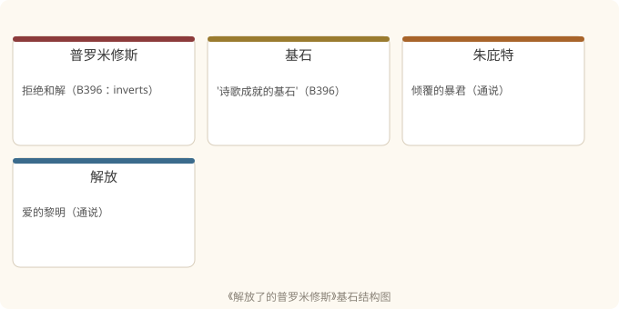

解放了的普罗米修斯
一、基本信息
| 作者 | 珀西·比希·雪莱 |
|---|---|
| 成书/出版 | 1819年秋完成于佛罗伦萨、约1820年出版（Britannica B396——'the keystone of Shelley's poetic achievement'） Percy Bysshe Shelley — Encyclopaedia Britannica（百科全书） |
| 国别/地区 | 英国 |
| 时代 | 近代 · 19世纪10年代末 |
| 体裁 | 抒情剧 |
| 语言 | 英语 |

《解放了的普罗米修斯》基石结构图（主题·结构图）
二、创作背景
Britannica（B396）：'inverts the plot of a lost play by Aeschylus'（颠倒埃斯库罗斯佚剧的情节——普罗米修斯与朱庇特和解改为推翻）。
Britannica（B396）：'supple blank verse with a variety of complex lyric measures'——'the keystone of Shelley's poetic achievement'。
Britannica（B396）：雪莱——1822年海难溺亡，29岁。
三、内容脉络
（通说待核——B396未载剧情）被缚的普罗米修斯拒绝和解：朱庇特的倾覆与'爱'的解放。
（通说待核）阿特拉斯女与亚洲的'革命'晨曲（通说待核）。
四、主要人物表
| 人物 | 身份 | 说明 |
|---|---|---|
| 普罗米修斯 | 被缚的泰坦 | （B396 书名人物） |
| 朱庇特 | 暴君 | （通说待核） |
五、主题与艺术特点
- '颠倒埃斯库罗斯'——和解改为推翻（B396：inverts the plot）。
- '雪莱诗歌成就的基石'（B396：keystone）。
- 素体诗与抒情格律的混合（B396）。
六、影响与评论
- Britannica：'the keystone of Shelley's poetic achievement'（B396）。
Percy Bysshe Shelley — Encyclopaedia Britannica（百科全书） - Britannica：《西风颂》同刊（B396 交叉）。
Percy Bysshe Shelley — Encyclopaedia Britannica（百科全书）
七、阅读建议
难点
- 抒情剧的'合唱'结构。
- 希腊神话原型（埃斯库罗斯佚剧——B396）。
- 《解放了的普罗米修斯》中译本（人民文学等——通说待核）。
- 英文原版（公有领域）。
雪莱代表作；与《西风颂》《阿多尼》对读。
八、待核实
- 四幕结构核对（通说）。
- 约1820年出版细节待核。
- '推翻'结局与埃斯库罗斯原剧对照待核（B396已载inverts）。